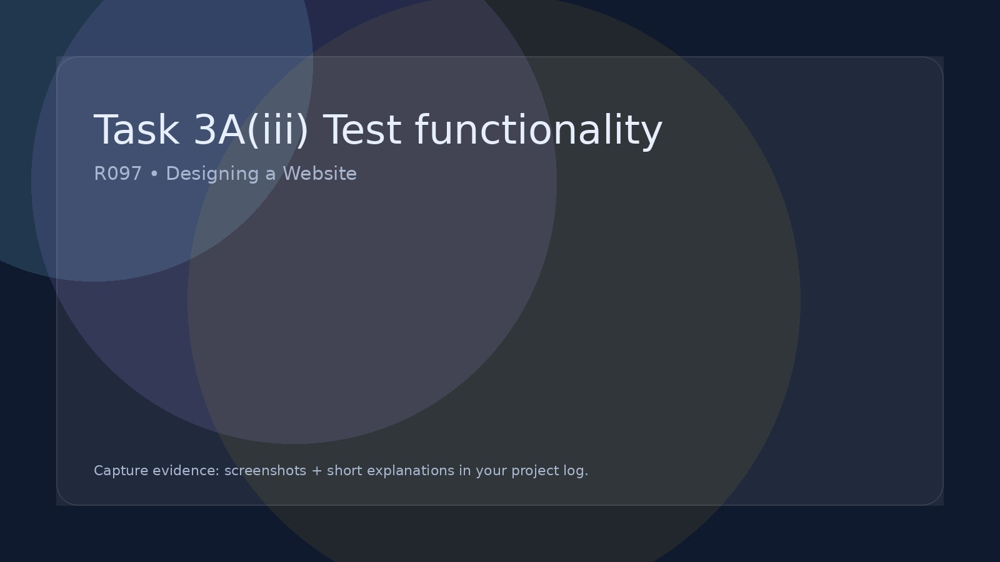

Task 3A(iii) Test functionality
Evaluate technical properties by testing the website’s functionality.
Run tests
Record results
Fix + retest
Template:
Functionality to test
- Navigation: menus, buttons, internal links, external links.
- Interactivity: forms/quiz/checklist behaviour and feedback.
- Responsive layout: phone/tablet/desktop display.
- Performance: large images, load time, broken assets.
- Accessibility: readable text, contrast, keyboard access (where relevant).
Evidence
- Completed test table (expected vs actual).
- Screenshots of pass/fail outcomes.
- Bug fixes with before/after screenshots.
- Retest outcomes after each fix.